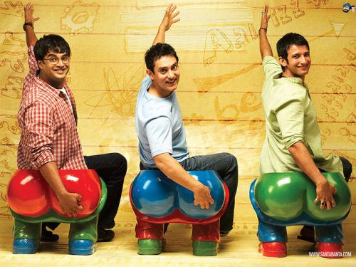
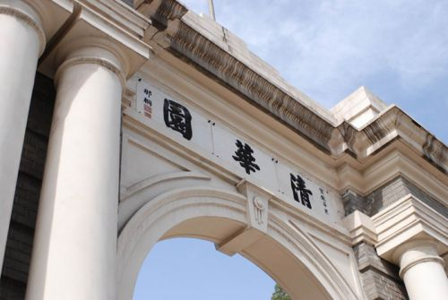

400-500-8888
时间：2016-04-21

来源：新芽NewSeed 作者：之之
近期，在美国，最抓人眼球的莫过于中印两国领导人相继访美。
先是9月22号，习主席访美，由、马化腾和李彦宏为代表的中国第一梯队企业集体亮相西雅图，成为外媒关注焦点。随后，印度总理莫迪到访硅谷，虽没有气宇轩昂的“boss天团”陪同，但来到硅谷，接见的科技巨头高管都是“自己人”——谷歌CEO皮柴（Sundar Pichai）、微软CEO纳德拉（Satya Nadella）和Adobe公司掌门人纳拉延（Shantanu Narayen），都是在印度出生长大，然后移民美国的。
事实上，印度和中国作为美国最具代表的技术移民族裔，在影响力和综合实力方面一直存在较大差距：印度人不仅在硅谷各大科技巨头公司C-level领导层占有席位，把控巨头公司发展走向，他们在领域也形成了端到端的产业链——印度很多B2B的创业公司，由印度VC，和印度人把控的IT企业形成战略伙伴关系为初创公司推波助澜，甚至被由印度人把控的IT企业最终收购，实现退出。相比起来，华人在硅谷科技界的影响力则逊色很多。并且这一差距，伴随着硅谷多位印度裔CEO的上马，正逐年加大。
中印在美实力差距拉大
目前，印度和中国的综合实力在本土和硅谷正好是反向的。在本土，印度国力不敌中国，而在硅谷，印度移民的力量不仅深入到各大科技公司，还在管理层和领导层占有重要席位。
本土国力方面，中国和印度悬殊在拉大，中国已经成为全球第二大经济体，而印度经济却始终受到语言、制度和基础设施等的限制。在中国以百度、阿里巴巴和京东为代表的翘楚在美国纳斯达克上市时，印度的科技行业还是IT服务、外包服务为主。
但是在硅谷，印度移民的实力在不断上升，而华人实力变化并不显著。虽然华人在加州的数量不断上升，遍布各大科技公司，但玻璃天花板仍然存在，任职在公司C-level最高层的领导人物少之又少。即使是自己创办的公司，最后也经常倾向于外聘CEO，自己做CTO，专注产品和技术研发。
而反观印度，他们似乎更适合这片土壤，相当如鱼得水。不仅有很多印度裔的高管，现在谷歌、微软和Adobe的掌门人都是在印度出生和长大的技术移民，而且他们在技术创新方面也非常活跃。据考夫曼基金会统计，在2006年到2012年间，硅谷每10个创业企业，有大约4家公司的创始人或者联合创始人是移民。而在这些移民创建的公司中，有三分之一由印度人发起。
中国究竟输在哪里？
那么，我们究竟输在哪里呢？为此，记者采访了硅谷“清华系”的代表领军人物——清华企业家协会天使基金（TEEC Angel Fund）的创始合伙人张于庆（Eugene Zhang），用自己的亲身经历给我们分析中印在硅谷力量悬殊背后的深刻原因。
首先，语言优势不足，文化上不接地气。
在语言方面，英语是印度的官方语言，虽然印度的方言千差万别，几乎无法用本土语言沟通，但是英语却是他们交流的最常用的工具。我们常常笑话印度人说英语是“咖喱味”的，但是他们用英语表达想法完全没有障碍。
但英语沟通对于华人却是一个难关。中文和英文分属不同的语系，语法结构和表述习惯差别很大。再加上应试教育注重读写，而轻听说，英文沟通的基础并没有打牢固。来到硅谷的华人大多数都是工程、编程等技术背景，这个群体有一个共性就是逻辑性强，有务实精神，对于技术问题一丝不苟，但却少言寡语。英语又并不是强项，这让他们更倾向于钻研技术问题，而少沟通，英语更加得不到锻炼。
在文化方面，骨子里的中华文化面对西方文化的时候，很多人颇为不知所措，甚至是强力抵触的。张于庆举了一个例子，自己的一个朋友刚毕业时去Cisco工作，第一个问的问题是“Is this allowed？（这是允许的吗？）”。当时，他的主管停顿了良久，不知道应该如何回答这个从来没有被问过的问题。
中国人的习惯思维方式是：这件事是否被允许？上级是否同意我这样做？而大多数的硅谷科技公司的文化是崇尚自由宽松的工作环境，采用扁平化的管理方式，虽然大家职位高低有别，但上下级的关系却淡化了。主管更想听到的员工对自己说：我有这样一个想法，你意下如何？我想实施这个方案，但我现在没有足够的资源，你是否能给我一些帮助。从被动到主动，从服从到领头，对于华人都是不小的心理跨越。相比之下，印度人在表达观点和争取资源上都表现得更为主动，火候也把握得比较好。这不仅得益于他们的语言优势，更得益于文化上的适应性。
再次，专业能力强，但管理意识不足。
在硅谷，不管是华人还是印度人，大多数都是技术背景出身。但你可以选择两条不同的职业发展路径。一条是纯粹的技术路线，做一个技术能力过硬的资深工程师。例如Google对工程师就分为十几个等级。另外一条就是先做技术，然后转向管理岗位，例如产品经理（Product Manager)或者产品经理（Product Marketing Manager）等。这些管理岗位不仅仅需要有深厚的技术功底，还需要对于市场趋势和产业环境有敏感度，最重要的还需要沟通和管理的能力。
张于庆告诉记者，很多华人埋头做技术，以为只要技术做的好就可以得到老板赏识，升职加薪指日可待，但实际情况并非如此，在硅谷这个技术牛人辈出的地方，软实力比硬实力显得更重要。你是否能够和同组的组员合作好，能否管理好手下的人都是重要的衡量标准。主管更想提拔那些软实力强的人，因为级别越高，承担的任务越是“少技术，多管理”。如何发挥团队每个成员的最大效力才是管理层最关心的问题。但很多华人并没有去关注自身管理能力的培养，对印度人在公司八面玲珑的能力嗤之以鼻，认为是“走关系”、“讨好上级”。这种偏见和心态也让很多有实力的华人只停留在技术岗位上，而没有上升空间。
最后，社团众多，力量分散。
从职场升职到创业，中国人都没有印度人抱团也是众所周知的。这一点可以从硅谷分散的华人组织可见一斑。近日，记者发现硅谷涌现了上百家大大小小的华人创业组织、协会和社团。不仅有行业细分，还有学校细分。一时间，大家的微信已经不知道加入多少个这样类似的社团组织。
张于庆告诉记者，相比于中国眼花缭乱的创业社团组织，这么多年来，他所知道的印度创业社团只有一个，那就是TiE, 全称是The Indian Entreprenuer（印度企业家协会）。这家协会有很多分会，已经是一个全球性的组织。1992年发起于硅谷，现在已经有13000多个会员，都是行业的精英和成功的企业家。这家协会为印度在创业领域形成的端对端的产业链做出了不小的贡献。印度创业者可以依托这个平台，找到印度的VC投资，然后再由印度把控的IT企业收购或者形成战略合作关系，帮助创业企业从想法层面到迅速成长的华丽变身。而华人虽然社团众多，但是力量却相对分散，资源没有实现最大程度的整合和利用。
不甘落后 排兵布阵追赶印度
对于目前中印的力量悬殊，在硅谷的华人都已经有所意识。特别是前不久谷歌创始人佩奇宣布成立字母表公司，皮柴成为谷歌的新任CEO时，华人都在反思为什么华人就不能也出几个C-level高管。
目前，已经有很多华人开始行动起来，这其中最具代表的就是硅谷人数最多的“清华系”的工程师们。目前在硅谷，清华毕业生达到一万多人，他们要么是各大IT公司的中坚力量，要么是跃跃欲试的创业者，他们逐渐意识到了抱团取暖的重要性，于是成立了清华企业家协会TEEC和其旗下的天使基金会TEEC Angel Fund，作为华人集合和分享资源、相互帮助的大本营和重要阵地，并推出了多种措施以提升华人在硅谷的地位。

在职场升职方面，清华企业家协会牵头倡导提拔启用更多华人年轻人。清华企业家协会汇聚了硅谷各大公司的“清华系”高管，他们已经在身体力行，有意识地培植岗位接班人，给更多的年轻有潜力的华人升迁的机会。同时，清华企业家协会和清华硅谷联网以及北加州清华校友会联合推出了“领航计划”，将华人高管与资历尚浅的年轻人联系起来，进行一对一的辅导。张于庆告诉记者，他们来美国的时候，华人还不是很多，走了很多弯路，犯了不少错误，才曲曲折折地走到管理岗位。这些经验他们都想传授给入职不久和才开始创业的年轻一代，让年轻人可以少走些弯路，也希望更多的华人能够在不久的将来成为大企业的高层管理人。给这个导师计划取名为”传承计划”也是意味着让老一辈的华人把经验传授下去，形成坚实的族裔纽带，让华人在硅谷科技界生生不息。
在创业方面，清华企业家协会天使基金也在为形成创业产业链谋篇布局。TEEC发展至今已经有400个会员，其中250位是公司CEO或者创始人，其他都是公司高管。这些成员分布全球各个重要城市，形成天然的行业上下游关系，可以互相找客户、找投资和合作伙伴。而TEEC Angel Fund作为TEEC的天使基金，一直在为形成完整的产业链谋篇布局。一方面依托校友会和协会的力量，吸引优秀的华人创业者。当华人创业者来到天使基金后，他们的强大导师团会提供辅导和资源上的帮助，而天使基金会提供创业者最需要的第一笔投资。他们还会继续帮助企业做大做强，强大的导师团和企业家协会的成功企业家和企业高管的资源帮助这些初创企业找客户、后续融资和全球合作伙伴。
“我们相信在不久的将来，更多的华人能够在硅谷重要的IT企业里担任高层管理人，打破玻璃天花板。这需要我们每一个人的努力。”张于庆说。
Copyright © 2015-2016 Maker Cloud 创客云 版权所有粤ICP备32852599-1


 在线咨询
在线咨询 在线咨询
在线咨询 400-500-8888
400-500-8888